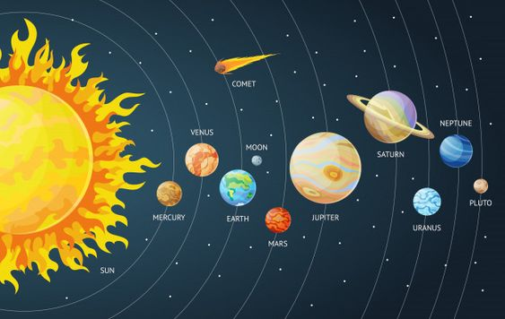

النظام الشمسي
النظام الشمسي هو نظام الجاذبية المرتبط بالشمس والأجسام التي تدور حوله، إما بشكل مباشر أو غير مباشر. أكبر هذه الأجسام هي الكواكب الثمانية والباقي هي أجسام أصغر.
الكواكب

الكواكب هي أجسام سماوية تدور حول نجوم، مثل الشمس، وتعتبر جزءًا من النظام الشمسي. تتميز الكواكب بعدة خصائص:
- الحجم: تختلف الكواكب في الحجم، حيث يمكن أن تكون كبيرة مثل المشتري أو صغيرة مثل عطارد.
- التكوين: تتكون الكواكب من مواد صلبة، غازات، أو كليهما، وتختلف في التركيب الكيميائي.
- المدارات: تدور الكواكب في مدارات بيضاوية حول النجوم، وتستغرق كل كوكب وقتًا مختلفًا لإكمال دورة حول نجمه.
- الجو: تحتوي بعض الكواكب على غلاف جوي، بينما لا تحتوي أخرى على غلاف جوي.
انتقل إلى صفحة الاستطلاع